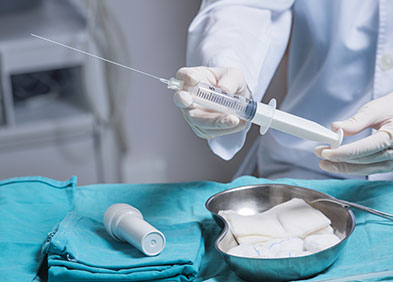

MEDECINE GENERALE
Consultation
Nos médecins généralistes sont des médecins qui prennent en charge la santé de nos patients a cœur au quotidien, sans se limiter à un type de maladie, une zone du corps ou une partie de la population. Le médecin est souvent la première personne vers qui l’on se tourne lorsqu’on a un problème de santé, c’est pourquoi son rôle est crucial et sa tâche délicate: recueillir et analyser un maximum d’informations, avancer un diagnostic et prendre des décisions, le tout en seulement vingt minutes! Nous consultons 24h/24_7j/7.Consulter un généraliste: combien ça coûte?
Le tarif et le taux de remboursement d’une consultation chez un médecin généraliste varient selon trois situations: si le médecin généraliste consulté est le médecin traitant du patient, le tarif conventionnel de la consultation est de 25€, remboursés à 70% par l’Assurance Maladie (soit 16,10€) ; si le médecin généraliste consulté est un médecin correspondant, c’est-à-dire que la consultation entre dans le cadre du parcours de soins coordonnés, le tarif conventionnel est de 26€, remboursés à 70% par l’Assurance Maladie (soit 17,20€) ; si le médecin généraliste est consulté en dehors du parcours de soins coordonnés, le tarif conventionnel de la consultation est de 25€, remboursés à 30% par l’Assurance Maladie (soit 6,90€). A noter que les remboursements de la Sécu tiennent compte de la participation forfaitaire de 1 € retenue sur chaque consultation.Le remboursement d’une consultation chez le médecin traitant en image
SOINS INFIRMIERS
Les articles R4311-1 à R4311-5 du code de la santé publique listent l’ensemble des actes qu’un infirmier est habilité à réaliser dans le cadre de son travail, indépendamment de toute prescription médicale. Après évaluation de la situation
et sur sa propre initiative, l’infirmier est en mesure de prodiguer des soins «liés aux fonctions d’entretien et de continuité de la vie et visant à compenser partiellement ou totalement un manque ou une diminution d’autonomie».
Les soins attenants au rôle propre de l’infirmier sont notamment:
les soins d’hygiène et de confort du patient (toilette, installation, aide au levé…), le recueil de données participant à la surveillance de son état de santé (mensurations, température, pouls, tension, rythme respiratoire, volume des urines, évaluation de la douleur…), la réalisation et le renouvellement des pansements et bandages non médicamenteux, la prévention et les soins des escarres, la pose et le changement des sondes vésicales, des actes d’urgence (l’utilisation d’un défibrillateur semi-automatique, la ventilation manuelle au masque), les soins préopératoires… L’infirmer est également responsable de la mise à jour du dossier du patient et chargé de transmettre à l’équipe médicale les informations le concernant.Soins sur prescription médicale
L’infirmier n’étant pas habilité à établir des ordonnances, une partie de son métier dépend des décisions prises par les médecins ou sages-femmes, sur le protocole de soins à respecter. Après prescription, l’infirmier réalise la partie «technique» du traitement, c’est-à-dire les injections de médicament, poses de perfusions, réalisation de pansements médicamenteux, etc. A noter que tous les soins infirmiers ne sont pas nécessairement prodigués à l’hôpital, c’est pourquoi il existe des infirmiers libéraux qui exercent leur métier à domicile.Soins spéciaux
Depuis quelques années, les infirmiers sont habilités à administrer le vaccin contre la grippe à certains patients sans prescription médicale (article R4311-5-1 du code de la santé publique). Sont concernés les personnes ayant déjà été vaccinées contre la grippe au moins une fois, en dehors des femmes enceintes et des jeunes de moins de 18 ans pour qui une ordonnance reste obligatoire. Par ailleurs, le code de la santé publique prévoit des rôles spécifiques aux infirmiers travaillant dans certaines spécialités: la santé mentale, le bloc opératoire, l’anesthésie, la puériculture. Ces infirmiers réalisent des formations supplémentaires et sont dits «spécialisés». TELECHARGER
EXAMENS
Un examen médical est une procédure de diagnostic réalisée pour des motifs de santé. Par exemple : pour diagnostiquer des maladies pour mesurer la progression, la régression ou la guérison des maladies pour confirmer chez quelqu'un l'absence
de maladie Quelques-uns se composent d'un simple examen physique, appelé également examen clinique : il ne requiert que de simples instruments entre les mains d'un médecin, et peuvent être réalisés dans son cabinet. D'autres requièrent
un équipement plus sophistiqué et/ou l'usage d'un environnement stérile. Quelques examens requièrent des tests sur échantillons de tissu ou des liquides corporels qui seront envoyés à un laboratoire médical pour analyse. Quelques tests
chimiques simples (comme la mesure du pH de l'urine) peuvent être mesurés directement dans le cabinet du médecin. Parfois la possibilité d'un faux-négatif ou faux positif doit être confirmé par une mise en culture à partir d'échantillons.
Certains examens peuvent également être effectués sur une personne morte dans le cadre d'une autopsie. Les examens médicaux peuvent être classés en deux catégories : examen invasif examen non invasif.
Nos examens disponible :
Amniocentèse
Une amniocentèse est un examen médical qui consiste à prélever une petite quantité du liquide amniotique entourant le fœtus dans l’utérus de sa mère. En général, il est prescrit par le médecin afin de détecter une anomalie chromosomique (par exemple la
trisomie 21) ou génétique.

Angiographie pulmonaire
L’angiographie pulmonaire est l’un des examens les plus prescrits dans le cadre du diagnostic de problèmes vasculaires au niveau des artères pulmonaires. Elle peut également permettre de traiter certaines anomalies du système vasculaire pulmonaire ou
d’administrer un médicament directement au niveau des poumons.

Antibiogramme
Une infection peut être provoquée par un certain nombre de germes tels que les bactéries, les virus ou les champignons. Quand l’origine est bactérienne, le traitement repose sur la prescription d’antibiotique. Un antibiogramme est un examen médical permettant
de déterminer lequel, parmi l’ensemble des antibiotiques disponibles est le plus adapté à la situation du patient.

Arthroscopie
Une arthroscopie est une intervention chirurgicale dite mini-invasive utilisée à la fois pour le diagnostic et le traitement de certaines affections des articulations. Elle est plus souvent employée pour le genou, mais peut aussi être utile pour d’autres articulations comme la hanche, l’épaule, la cheville, le poignet ou les doigts. L’intervention est rapide, généralement moins d’une heure, mais nécessite une hospitalisation, au moins la journée de l’intervention, ainsi qu’une anesthésie. Les complications sont très rares, et la récupération articulaire est souvent rapidement obtenue.Audiométrie
L’audiométrie est un examen médical permettant d’évaluer la qualité de l’audition. Il est habituellement effectué par un médecin ORL. L’examen peut être demandé en cas de difficulté de compréhension du patient, par exemple lors d’une conversation, ou effectué dans le cadre d’un bilan de routine.
Bilan sanguin
Un bilan sanguin regroupe un ensemble d’analyses réalisées à partir d’un prélèvement sanguin. Les paramètres à étudier sont sélectionnés par le médecin en fonction du diagnostic envisagé ou des organes suspectés.
Coloscopie
Une coloscopie, aussi appelée endoscopie digestive par voie basse, est un examen d‘imagerie médicale permettant de visualiser la paroi interne du côlon grâce à un instrument appelé coloscope. C’est l’examen de dépistage le plus fiable pour mettre en évidence des éventuelles lésions au niveau du côlon. Par ailleurs, les lésions constatées lors de l’examen peuvent être traitées, plus ou moins entièrement.
Echographie
Une échocardiographie ou échographie cardiaque ou encore écho-doppler cardiaque est une technique d’imagerie médicale extrêmement courante permettant de visualiser et d’analyser la morphologie, les mouvements et les dimensions des différentes structures du cœur, de ses valves, et des vaisseaux environnants. Elle est basée sur l’utilisation des ultrasons via une sonde placée sur le thorax du patient. Cet examen dure environ 30 minutes, et est totalement indolore.
IRM
L’IRM ou imagerie par résonance magnétique est un examen médical basé sur l’utilisation de champs magnétiques. Il permet d’obtenir des clichés du corps humain en deux ou trois dimensions. Cette technique est employé quotidiennement.
MEDECINE SPECIALE
CARDIOLOGIE
La cardiologie est une branche de la médecine qui traite des troubles du cœur ainsi que de certaines parties du système circulatoire. Le domaine comprend le diagnostic médical et le traitement des malformations cardiaques congénitales, des maladies coronariennes, de l'insuffisance cardiaque, des cardiopathies valvulaires et de l'électrophysiologie. Les médecins spécialisés dans ce domaine de la médecine sont appelés cardiologues. Les cardiologues pédiatres sont des pédiatres spécialisés en cardiologie. Les médecins spécialisés en chirurgie cardiaque sont appelés chirurgiens cardiothoraciques ou chirurgiens cardiaques, une spécialité de la chirurgie générale.Quelques exemples de maladies touchant le coeur :
AVC
Un Accident Vasculaire Cérébral, appelé dans le langage courant AVC, est aujourd’hui, une des principales causes de mortalité en France et reste la première cause de handicap acquis de l’adulte. Il est provoqué par un arrêt brutal de la circulation sanguine au niveau du cerveau. La connaissance des symptômes évocateurs et une prise en charge précoce permettent de diminuer fortement les lésions cérébrales et donc les séquelles.
ARYTHMIE
Le rythme cardiaque normalement régulier est compris entre 60 et 80 battements par minute. Toutefois, lorsqu’il s’accélère, se ralentit ou devient irrégulier, on parle alors d’arythmie ou de troubles du rythme cardiaque. Il représente des pathologies très variées, plus ou moins graves, mais dont les symptômes peuvent affecter les conditions de vie des patients. Avec une surveillance régulière, des mesures de prévention et, si besoin, un traitement adapté, il est possible d’en limiter les symptômes et les risques de complications.
Angine de poitrine ou angor
L’angine de poitrine ou angor est l’un des symptômes de la maladie coronarienne qui se manifeste sous forme d’un syndrome douloureux thoracique. L’angor est causé par un déficit d’apport en oxygène au niveau du cœur entraînant une ischémie myocardique (muscle du cœur). La douleur ressentie apparaît souvent à la suite d’un effort ou d’un stress avant de disparaître après une phase de repos. Le nombre de personne touchées par l’angor augmente avec l’âge si bien que l’on estime que 13 % des hommes âgés de 65 à 84 ans souffrent d’angor.
Athérosclérose
Les maladies cardiovasculaires représentent la première cause de mortalité dans les pays développés, parmi elles, l’athérosclérose est une maladie des artères très fréquente. Son traitement repose principalement sur la prévention des facteurs de risque (hypercholestérolémie, diabète, hypertension artérielle , tabagisme, surpoids).
Bradycardie
La bradycardie est un trouble du rythme cardiaque, qui se manifeste par un ralentissement du rythme cardiaque, en-dessous de 50 battements par minute. Ses causes sont multiples, physiologiques ou pathologiques. La bradycardie peut être isolée ou s’accompagner d’autres symptômes, de nature cardiovasculaire ou pas. La prise en charge de la bradycardie dépend étroitement de son origine et de sa gravité.
Cardiomégalie
Une cardiomégalie est une atteinte cardiaque survenant suite à plusieurs pathologies, cardiaques ou non. Elle se traduit par une augmentation du volume cardiaque, généralement prédominante pour la partie gauche de l’organe. D’abord asymptomatique, cette atteinte se manifeste à un stade plus avancé par divers symptômes comme un essoufflement, des oedèmes des membres inférieurs, une sensation de malaise, etc. Le diagnostic est clinique et confirmé par radiographie et échographie du thorax. Le traitement d’une cardiomégalie consiste à traiter sa cause.
Insuffisance cardiaque
insuffisance cardiaque L’insuffisance cardiaque est une affection fréquente et de mauvais pronostic. En effet, la prévalence de l’insuffisance cardiaque est estimée à 2.3% en France et malgré une prise en charge améliorée, la mortalité associée à l’insuffisance cardiaque reste importante.
CHIRURGIE
La chirurgie est la partie de la thérapeutique qui implique des opérations internes ou des manœuvres externes1 sur les tissus, notamment par incision et suture. Un chirurgien est un professionnel de la santé habilité à pratiquer la chirurgie (médecin
spécialiste, chirurgien-dentiste, vétérinaire). Un acte médical pratiqué par un chirurgien est une opération chirurgicale.
les différents types de chirurgie :
La chirurgie dentaire concerne les interventions de la bouche, des dents, des maxillaires et des tissus attenants. Elle est pratiquée par le chirurgien-dentiste et le médecin spécialiste en stomatologie. La chirurgie orale concerne les interventions chirurgicales lourdes au sein de la cavité orale. Elle est pratiquée par le médecin spécialiste en chirurgie orale et le chirurgien-dentiste spécialiste en chirurgie orale. La chirurgie maxillo-faciale concerne les interventions sur le massif oro-facial. Elle est pratiquée par le médecin spécialiste en chirurgie maxillo-faciale et stomatologie. La chirurgie cervico-faciale et l'oto-rhino-laryngologie concerne les interventions du cou, de l'oreille et du nez. Elle est pratiquée par le médecin spécialiste en oto-rhino-laryngologie. La chirurgie oculaire/ophtalmologique concerne les interventions sur les yeux et les structures annexes. Elle est pratiquée par le médecin spécialiste en ophtalmologie. La chirurgie orthopédique concerne les interventions sur l'appareil locomoteur (os, articulations, muscles, tendons, nerfs). Elle est pratiquée par le médecin spécialiste en chirurgie orthopédique et traumatologie. La chirurgie thoracique concerne les interventions sur les parois thoraciques, les poumons et les structures annexes. Elle est pratiquée par le médecin spécialiste en chirurgie thoracique. La chirurgie cardiovasculaire concerne les interventions sur le cœur et les vaisseaux coronaires. Elle est pratiquée par le médecin spécialiste en chirurgie cardiovasculaire. La chirurgie viscérale concerne les interventions sur les organes abdominaux (par exemple : exérèse d'un cancer du côlon). Elle est pratiquée par le médecin spécialiste en chirurgie viscérale et digestive. La chirurgie vasculaire concerne les interventions sur les vaisseaux, artères et veines. Elle est pratiquée par le médecin spécialiste en chirurgie vasculaire. La neurochirurgie concerne les interventions sur le système nerveux central (le cerveau, la moelle épinière) et le système nerveux périphérique. Elle est pratiquée par le médecin spécialiste en neurochirurgie. L'urologie concerne les interventions sur les reins et les voies urinaires, ainsi que sur l'appareil génital masculin. Elle est pratiquée par le médecin spécialiste en urologie. La chirurgie gynécologique concerne les interventions sur l'appareil génital féminin. Elle est pratiquée par le médecin spécialiste en gynécologie. L'obstétrique concerne les interventions chez la femme enceinte. Elle est pratiquée par le médecin spécialiste en gynécologie obstétrique. La chirurgie pédiatrique concerne la chirurgie de l'enfant. Elle est pratiquée par le médecin spécialiste en chirurgie infantile. La chirurgie plastique, reconstructrice et/ou esthétique. Elle est pratiquée par le médecin spécialiste en chirurgie plastique, esthétique et reconstructrice. La chirurgie générale. Par ailleurs : la microchirurgie nécessite un microscope opératoire pour effectuer des interventions de précision ; la chirurgie cœlioscopique nécessite l'introduction d'un tube muni d'une caméra et d'un éclairage, ainsi que de plusieurs instruments à travers de petites incisions cutanées, permettant une intervention avec vision indirecte du champ opératoire et sans nécessité d'une grande incision ; la chirurgie ambulatoire désigne des opérations avec une durée d'hospitalisation de moins d'une journée ; la chirurgie vétérinaire correspond à l'ensemble des thérapeutiques chirurgicales pratiquées par le vétérinaire sur l'animal.
NEUROLOGIE
La neurologie est la discipline médicale qui prend en charge les maladies du systèmenerveux. Le système nerveux comprend le système nerveux central (cerveau et moelle épinière), le système nerveux périphérique (nerfs crâniens et nerfs des membres) et
le système nerveux végétatif. Les fonctions assurées par l’ensemble de ce système sont : conscience, veille et sommeil, fonctions intellectuelles, communication et langage, comportements, contrôle des mouvements, perceptions sensorielles,
douleur, régulation des organes internes. La neurologie recouvre ainsi une vaste palette de maladies dont la complexité exige une extrême rigueur dans les démarches diagnostique et thérapeutique. L’écoute attentive du patient et de son
entourage permet de recueillir des indices qui guideront l’examen clinique, étape primordiale du diagnostic en neurologie. Cette démarchelogique permet de déterminer les examens complémentaires appropriés et leur degré d’urgence.
Quelques exemples de maladies neurologique
Algie vasculaire de la face
L’Algie vasculaire de la face est un trouble caractérisé par des crises douloureuses très intenses au niveau de la face (le plus souvent, autour de l’œil et de la tempe). Les douleurs sont généralement associées à une congestion ou un écoulement nasal, un larmoiement et une rougeur de l’œil. Le diagnostic est clinique. Le traitement de la crise repose sur la prise d’antimigraineux (triptans ou dihydroergotamine) ou l’oxygénothérapie. Certains médicaments peuvent être prescrits en prévention, par exemple du vérapamil, du lithium, du topiramate ou du valproate.Amnésie
L’amnésie est un trouble de la mémoire qui se traduit par une perte, plus ou moins complète de la capacité à se remémorer des faits ou des souvenirs. Les causes d’amnésie sont nombreuses. La perte de mémoire peut être la conséquence d’une maladie ou d’un accident. Le diagnostic est clinique, mais très souvent associé à des examens complémentaires neuropsychologiques et à une imagerie cérébrale. Le traitement d’une amnésie est celui de sa cause lorsque cela est possible.
PEDIATRIE
La pédiatrie est une spécialité médicale qui se consacre à l’enfant, depuis la vie intra-utérine (en lien avec l’obstétrique ) jusqu’à la fin de l’adolescence. En s’intéressant à l’alimentation et en suivant la croissance et l’évolution de l’enfant, la
pédiatrie exerce un rôle important de prévention et de détection, et s’attache à diagnostiquer et à traiter les pathologies qui peuvent affecter sa santé. Aujourd’hui, le médecin pédiatre, qui travaille souvent en réseau avec d’autres
professionnels de santé, de l’éducation et des travailleurs sociaux, s’impose comme un acteur clé de son développement.
.jpg)
ORL
Le sigle ORL peut signifier :
otorhinolaryngologie, une spécialité de la médecine ; otorhinolaryngologiste, le praticien qui l'exerce ; la société française ORL, qui regroupe la communauté scientifique des ORL français et de langue française ; observation réfléchie de la langue française (ou ORLF), appellation officielle, depuis 2002, d'un ensemble de disciplines regroupant la grammaire, la conjugaison, l'orthographe et le vocabulaire au cycle 3 de l'école élémentaire française.quelques exemples d'ORL
Acouphènes
Les acouphènes correspondent à des bruits entendus ou des sensations auditives perçus dans l’oreille ou la tête sans qu’ils ne soient émis par l’extérieur. Selon les patients, les acouphènes correspondent à des bourdonnements, des sifflements, des grincements, des cliquetis, etc. Ces symptômes peuvent être constants ou intermittents. Ils sont souvent causés par un traumatisme acoustique ou liés au vieillissement de l’oreille. En France, plus de 8 millions d’individus souffrent d’acouphènes.
Amygdalite
Une amygdalite désigne une infection d’origine bactérienne ou virale des amygdales localisées dans la gorge, de part et d’autre de la luette. Elle concerne plus volontiers les enfants et les adolescents. L’infection se traduit par divers symptômes, dont le plus fréquent est le mal de gorge. Le diagnostic est clinique, et le traitement est généralement symptomatique.
Bouchons de cérumen
peuvent être utilisés pour prévenir ou éliminer les bouchons de cérumen. Par contre, certains dispositifs, comme les cotons tiges, ne doivent surtout pas être utilisés, car ils peuvent favoriser la formation d’un bouchon de cérumen.
dysphonie
La dysphonie correspond aux modifications anormales de la voix. Aigües ou chroniques, ses causes peuvent être variables et impliquent notamment les cordes vocales ou le larynx. La dysphonie se manifeste de diverses manières selon l’origine du trouble et son traitement est également étroitement dépendant de la cause des symptômes.
Grippe saisonnière
La grippe saisonnière est une infection d’origine virale. Elle est extrêmement contagieuse et peut être dramatique chez les individus les plus fragiles. Les épidémies de grippe surviennent en automne et en hiver. L’affection se traduit en général par de la fièvre, de la fatigue, des douleurs musculaires et/ou articulaires et une toux. Des complications peuvent survenir chez les personnes fragiles. Le diagnostic repose sur la présence des symptômes caractéristiques de la grippe. Le traitement est symptomatique (repos, hydratation, paracétamol). Il consiste à soulager les symptômes en attendant la guérison. Pour prévenir la grippe, la vaccination reste la meilleure option. Elle est vivement conseillée chez les personnes à risque de développer des complications (femmes enceintes, nourrissons, personnes de plus de 65 ans, individus souffrant de pathologie chronique, etc.).
URGENCES
LES DIFFERENTS SITES MEDICALE DE ouagadougou

EQUIPES
Administration
LA COMPOSITION DU CONSEIL
D'ADMINISTRATION. - Les règles générales de composition des conseils d'administration des établissements publics de santé relèvent du législateur. En revanche, il appartient au gouvernement de fixer par voie réglementaire le nombre exact de leurs membres, selon le type d'établissement. A) Les règles générales de composition des conseils d'administration (art. L. 6143-5 Ncsp). - Il appartient au législateur, en vertu de l'article 34 de la Constitution, de fixer les règles concernant la création des catégories d'établissements publics. Ainsi, l'ordonnance du 24 avril 1996 (art. 41) détermine les catégories de personnes présentes dans les conseils d'administration, en posant certaines règles de dosage jugées particulièrement importantes, et en prescrivant la présence de membres de droit.1) Les six catégories de membres.
- L'article L 6143-5 Ncsp dispose que le conseil d'administration des établissements publics de santé comprend six catégories de membres : 1° des représentants des collectivités territoriales ; 2° des représentants du personnel médical, odontologique et pharmaceutique ; 3° un représentant de la commission du service de soins infirmiers ; 4° des représentants du personnel relevant du titre IV du statut général des fonctionnaires ; 5° des personnalités qualifiées. 6° des représentants des usagers. - En outre dans les établissements comportant des unités de soins de longue durée, un représentant des familles de personnes accueillies en long séjour peut assister, avec voix consultative , aux réunions du conseil d'administration. - Observons que l'ordonnance du 24 avril 1996 autorise le conseil municipal et le conseil général à choisir leurs représentants hors de leur sein.2) Les règles de dosage.
- Les catégories mentionnées au 2° d'une part, et aux 3° et 4° d'autre part, comptent un nombre égal de membres ; elles ne peuvent détenir ensemble un nombre de sièges supérieur à la catégorie mentionnée au 1°. Ceci appelle deux observations : 1. Pour reprendre l'ancienne formulation, la catégorie des représentants du personnel médical, odontologique et pharmaceutique compte un nombre égal à l'ensemble constitué par les représentants du personnel relevant du titre IV et par le représentant de la commission du service de soins infirmiers. 2. Mais (et c'est nouveau), les représentants des collectivités territoriales doivent désormais être au moins aussi nombreux que les représentants du personnel (médical et non médical) de l'établissement. - La catégorie mentionnée au 5° (personnalités qualifiées) comporte au moins un médecin et un représentant des professions paramédicales non hospitaliers.3) Les membres de droit (art. L. 6143-5 Ncsp).
- En principe, la présidence du conseil d'administration des établissements communaux est assurée par le maire, celle du conseil d'administration des établissements départementaux par le président du conseil général. Pour les établissements intercommunaux et interdépartementaux, c’est l'acte de création qui désigne le président du conseil d'administration parmi les représentants des catégories mentionnées au 1° ou au 5° ci-dessus. - Le président de droit peut renoncer à cette présidence ; il désigne lui-même son remplaçant, mais seulement dans les catégories 1° ou 5°. - Le président et le vice président de la commission médicale d'établissement sont membres de droit du conseil d'administration de l'établissement, au titre de la catégorie mentionnée au 2° ci-dessus. - Dans les centres hospitaliers régionaux faisant partie d'un centre hospitalier universitaire, le directeur de l'unité de formation et de recherche médicale ou le président du comité de coordination de l'enseignement médical est, en outre, membre de droit du conseil d'administration. B) Le nombre total de membres des conseils d'administration. - La composition précise du conseil d'administration est fixée par décret ; elle varie selon la catégorie de l'établissement. Si on met à part ces catégories uniques que constituent l'Assistance publique de Paris, celle de Marseille et les Hospices civils de Lyon, on doit distinguer trois catégories d'établissements : les hôpitaux locaux (17 membres), les établissements non-HL/non-CHR (21 membres) et les CHR-U (30 membres). - Les modalités d'élection ou de désignation des membres sont fixées par décret, sauf pour les représentants des collectivités territoriales (loi). - Question de la publication des désignations : la délibération du conseil municipal désignant une personne pour siéger au conseil d'administration de l'hôpital doit faire l'objet d'une publication. A défaut de celle-ci, tout intéressé peut se prévaloir de cette irrégularité pour en obtenir l’annulation (TA Lille. 29 octobre 1973, Gaz. Pal. 1975. 1. somm. p. 171). Cette obligation peut sans doute être étendue à d’autres représentants. C) Les membres siégeant avec voix consultative : - Le directeur, qui est en outre secrétaire du Conseil d'administration, - le comptable, - le pharmacien (pour les questions concernant le service de la pharmacie, décret n° 97-529 du 26 mai 1997, pris en application de la loi du 8 décembre 1992), - le MIRS, le DDASS, le DRASS, le Préfet, le DARH, s'ils le désirent.PERSONNEL
Personnel médical Dans les hôpitaux publics on trouve différentes catégories de médecins. Médecin s’entend ici dans le sens de docteur, c’est-à-dire titulaire d’un doctorat. De ce fait, l’expression personnel médical regroupe les médecins proprement dit, mais aussi les biologistes, les orthodontistes et les pharmaciens, tous docteurs. Si la plupart sont salariés par l’hôpital, d’autres sont des libéraux venant exercer une activité à temps partiel, soit comme attachés, (et ils sont alors salariés pour cette activité), soit dans un cadre libéral, (avec paiement à l’acte par les patients). Cette activité peut se faire dans le cadre d’un GCS (Groupement de Coopération Sanitaire), notamment en imagerie médicale (de nombreux scanners ou IRM implantés dans les hôpitaux appartiennent pour partie à des radiologues libéraux, avec des plages d’utilisation publiques et d’autres privées). Parmi les médecins qui exercent à l’hôpital, certains sont encore en formation : les internes, qui apprennent le métier pendant leur internat, (avec changement de service ou d’hôpital tous les six mois), et les chefs de clinique, qui peaufinent leur formation en effectuant leur clinicat dans le même service pendant un à trois ans. A la fin de leur internat ou de leur clinicat, certains d’entre eux iront s’installer dans le privé, d’autres resteront à l’hôpital.Praticien hospitalier Pour être titularisé comme praticien hospitalier, il est nécessaire d’avoir réussi le concours de Praticien Hospitalier (PH). En attendant ce graal, le médecin hospitalier est dit contractuel, avec différentes possibilités statutaires, comme celle d’assistant. On trouve également dans les CHU des médecins qui ont aussi une fonction d’enseignants : ce sont les professeurs, que l’on appelle actuellement PU-PH (Professeur des Universités-Praticien Hospitalier). Certains médecins hospitaliers travaillent à temps plein (c’est-à-dire théoriquement 35 heures, en pratique parfois le double avec les gardes et les astreintes), d’autres à temps partiel. Enfin, certains médecins hospitaliers ont un diplôme français, d’autres un diplôme étranger (ceux qui sont délivrés par un pays de l’Union Européenne sont valables en France). Bref, il y a beaucoup de médecins étrangers dans nos hôpitaux, qui ne pourraient pas fonctionner sans eux. Et puis, surtout, il y a un trop grand nombre de remplaçants, faute de titulaires ! Personnel soignant Ce terme (on parle également de personnel paramédical) désigne, à l’hôpital comme en clinique, l’ensemble du personnel salarié non médical qui soigne les patients, autrement dit avant tout les infirmières (IDE) et les aides-soignantes (AS). On note une proportion d’hommes de plus en plus importante dans ces deux fonctions traditionnellement plutôt féminisées. Les IDE et les AS sont chapeautés par un personnel d’encadrement (le cadre a pris la succession de l’ancien surveillant, terme aujourd’hui désuet). Les cadres sont en général d'anciens soignants, mais abandonnent le soin pour l'encadrement.Personnel de bloc opératoire Mais il existe nombre d’autres paramédicaux, dans les services de soins, comme les psychologues, les kinésithérapeutes et les ergothérapeutes, les auxiliaires de puériculture en pédiatrie, et dans les services dits médico-techniques, comme l’imagerie médicale, qui emploie des manipulateurs radio (ce sont eux qui, en pratique, réalisent la plupart des radios, le médecin se contentant de l’interprétation), ou le laboratoire qui fonctionne avec des laborantin(e)s, qui réalisent notamment les prélèvements sanguins. La particularité de ces professions paramédicales est que l’on ne peut les exercer qu’avec un diplôme, chaque fonction ayant son propre diplôme. En droit du travail, on sait que la rémunération dépend de la fonction exercée, quelque soit le diplôme ; à l’hôpital, c’est le même principe qui s’applique, si ce n’est que chacun occupant la fonction pour laquelle il est diplômé, cela revient dire que le salaire dépend en réalité du diplôme. Sages-femmesSage-femme Cette fonction a pendant très longtemps été remplie exclusivement par des femmes, mais elle se masculinise très progressivement. Les hommes qui exercent ce beau métier sont appelés maïeuticiens (la maïeutique, chez les anciens Grecs, désignait l’accouchement ; la mère de Socrate était maïeuticienne). Elles ont un statut particulier, ni personnel soignant (elles détestent qu’on les intitule ainsi), ni vraiment personnel médical, bien qu’elles exercent quasiment le même métier, en pratique, que les obstétriciens (ce sont elles qui assurent la plupart des accouchements). Elles ont donc fait en 2014 une très longue grève pour obtenir une revalorisation statutaire, qui leur a finalement été accordée, à l'exclusion du titre de docteur. Je rappelle que, dans le domaine de la santé, quand des professionnels font grève, ils sont systématiquement réquisitionnés, afin qu’il n’y ait aucune rupture dans la continuité des soins. Autres catégories de personnelSecret médical Les services hospitaliers ne pourraient pas fonctionner sans un grand nombre d’autres professionnels, comme les ASH (Agent de Service Hospitalier), les secrétaires médicales, les assistantes sociales, les standardistes, les brancardiers, les ouvriers des services techniques, et, bien entendu, le personnel administratif. J’en oublie probablement. Tout ce petit monde se trouve astreint au secret médical. Dans les hôpitaux publics, l’ensemble des personnels titulaires appartiennent à la fonction publique hospitalièr (une des trois fonctions publiques en France), sauf le personnel médical qui a un statut particulier (les praticiens hospitaliers, qu’ils soient médecins, biologistes, orthodontistes ou pharmaciens, ne sont pas des fonctionnaires, mais des agents publics sous statut).
Dr KABORE
Cardiologue
Cardiologue

Dr OUEDRAOGO
Neurologue
Neurologue
Dr KEITA
Chirurgien
Chirurgien
SERVICES D'ENTRETIENS
Nettoyage des locaux hospitaliers, distribution des repas aux patients… : le travail de l’agent hospitalier est indispensable à la prise en charge et au confort des malades. Activités principales L'agent de service hospitalier participe au bien-être et
au confort des patients. Il nettoie les chambres, les couloirs, les bureaux dans un hôpital, une maison de retraite ou de cure. Il assure la désinfection et la décontamination des blocs opératoires. Il peut aussi être chargé de la distribution
des repas, d'animations, etc. Comment travaille-t-il ? Respectant des protocoles de nettoyage très stricts, l'agent de service hospitalier est responsable de la propreté irréprochable de chaque pièce dont il a la charge : couloirs, chambres,
bureaux, mobilier, etc. Il utilise pour cela des détergents et des désinfectants pour faire disparaître toutes les bactéries : c'est le bio-nettoyage. Il part toujours du plus propre pour aller vers le plus sale. Dans les blocs opératoires,
il nettoie la table d'opération, les poignées de porte et, comme pour toutes les pièces, il termine par les sols. Dans les maisons de retraite comme dans les hôpitaux, l'agent de propreté hospitalier peut distribuer les plateaux repas
ou assurer le service en salle, en fonction de ses horaires de travail. Il assure aussi des animations auprès des résidents, sous la responsabilité de l'équipe soignante. Où exerce-t-il ? Les hôpitaux publics et les établissements de soins
privés (cliniques, etc.) sont les principaux employeurs des agents de service hospitalier, mais les maisons de retraite et les instituts de cure font également appel à ces professionnels. Selon l’enquête besoins en main d’œuvre (BMO) de
Pôle emploi, près de 2 000 recrutements d’agents hospitaliers étaient prévus en Île-de-France en 2018. Les postes se situent en particulier dans les départements de Paris (75) et de l’Essonne (91). Compétences pour être Agent de service
hospitalier Qualités requises Méticuleux : Respecter les règles d'hygiène, les protocoles de nettoyage est primordial. Le métier d'agent de service hospitalier suppose de la rigueur et de la précision dans chaque geste. Autonome : Chaque
jour, l'agent de service hospitalier prend en charge le nettoyage de différentes pièces en fonction du planning établie par le chef d'équipe. Il connaît chacun des produits qu'il utilise, les protocoles à appliquer et réalise seul le nettoyage.
Polyvalent : L'agent hospitalier doit savoir s'adapter aux différentes missions qui lui sont demandées : assurer le ménage, distribuer les repas... mais aussi parfois apporter son aide pour déplacer un malade, participer à des animations
au sein d'une maison de retraite, etc. Savoir-faire - Vérifier le contenu du chariot de ménage et procéder à la préparation des solutions de nettoyage - Nettoyer, désinfecter et ranger la chambre et l'installation sanitaire - Entretenir
des locaux - Suivre l'état des stocks - Définir des besoins en approvisionnement - Établir une commande - Consigner des données dans un registre Savoir - Lecture de fiche technique - Utilisation de monobrosse - Règles d'hygiène et d'asepsie
- Techniques de bio-nettoyage - Protocoles de lutte contre les infections nosocomiales - Utilisation de matériel de nettoyage (Source: ROME) Comparer avec un ou deux autres métiers Pour mieux choisir, comparez le salaire, le statut, le
niveau d’accès, la tendance sur le marché du travail les métiers qui vous intéressent. Comparer Salaire Agent de service hospitalier Secteur public Dans la fonction publique, votre salaire (ou "traitement ") dépend de votre grade et de
votre échelon. A cette rémunération principale, qui progresse avec l'ancienneté, s'ajoutent diverses indemnités et primes, versées par exemple en fonction de votre lieu d'exercice ou de la taille de votre famille. Agent de service hospitalier
qualifié 1 527 € Les montants indiqués correspondent aux rémunérations mensuelles brutes, hors primes et indemnités, en début de carrière, pour l’année 2019. Consulter la grille indiciaire agent de service hospitalier qualifié. Secteur
privé Découvrir la rémunération moyenne, les revenus en début et en fin de carrière. Découvrir la fourchette des revenus. Emploi Secteur privé Repérer les débouchés en Île-de-France du domaine du personnel polyvalent des services hospitaliers
dans lequel s’intègre mon métier : nombre d'emplois, géolocalisation, types de contrat, embauches prévues... Choisir ma formation pour devenir Agent de service hospitalier S’il n’existe pas de formation spécifique, le métier d’agent de
service hospitalier se professionnalise et demande de plus en plus souvent d’avoir un diplôme de niveau CAP pour y accéder. Formation initiale Pour exercer le métier d’agent de service hospitalier, vous pouvez notamment préparer en 2 ans
après la classe de 3ème un CAP agent de propreté et d’hygiène. Au niveau bac, avec un bon dossier en 3 ans après la 3ème ou en 2 ans à la suite du CAP, vous pouvez également préparer le bac professionnel hygiène propreté stérilisation
ou le bac professionnel accompagnement, soins et services à la personne (ASSP). Le bac professionnel permet d'exercer rapidement des fonctions d'encadrement. Toujours avec un très bon dossier ou une mention au bac, une poursuite d’études
est envisageable en BTS métiers des services à l'environnement. Être titulaire de ce diplôme permet d’accéder directement à une fonction de responsable de secteur. Formation continue Les personnes entrées dans la profession sans diplôme
ont la possibilité de faire reconnaître leurs compétences par la validation des acquis de l’expérience (VAE), pour obtenir par exemple le CAP agent de propreté et d’hygiène. Après quelques années de carrière et une formation de complémentaire,
il est possible d’envisager des passerelles vers d’autres métiers hospitaliers (aide-soignant, infirmier). Dans le cadre d’une reconversion, il est possible de préparer le métier d’agent de service hospitalier dans le cadre de la formation
continue. De nombreuses formations existent, dont certaines menant à une certification comme le titre professionnel (TP) agent de propreté et d’hygiène ou la certification professionnelle FFP (Fédération de la Formation Professionnelle)
agent de service hospitalier. Pour aller plus loin, consultez la liste nationale des certifications (correspondant au code ROME) : http://www.rncp.cncp.gouv.fr/grand-public/resultat?romeRNCP=J1301 Formations liées Toutes les formations
(90) Bac pro accompagnement, soins et services à la personne option A à domicile CAP ou équivalent #FormationContinue Bac pro accompagnement, soins et services à la personne option A à domicile Classe de collège ou de lycée #FormationContinue
Bac pro accompagnement, soins et services à la personne option A à domicile CAP ou équivalent #FormationContinue Changer bouger Identifier les métiers vers lesquels évoluer avec ou sans formation complémentaire. Liens utiles Fiche ROME
J1301 Personnel polyvalent des services hospitaliers Fiche-métier de Hôpital.fr - Agent de service hospitalier Fiche-métier de Itinéraire propreté - Agent de service hospitalier Fédération des Entreprises de Propreté et services associés
(FEP) La FEP est l'organisation patronale représentative du secteur de la Propreté. Hôpital.fr Lancé à l’initiative de la Fédération hospitalière de France, le site hopital.fr propose aux usagers des informations sur la santé, un annuaire
des établissements et des données pratiques sur le fonctionnement du service public hospitalier et médico-social. Itinéraire propreté Créé à l’initiative de la Fédération des entreprises de propreté, ce site présente les métiers et les
formations de la propreté. 1 Description
COPYRIGHT-FRANY-2022